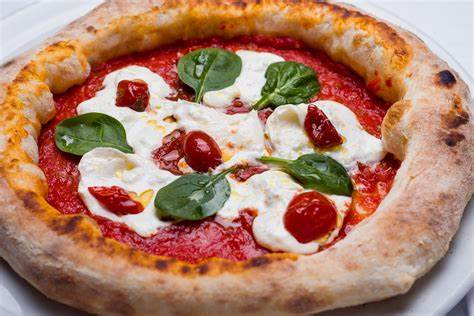

Pizza

Description
This homemade pizza recipe brings the taste of your favorite pizzeria right to your kitchen. With a crispy golden crust, rich tomato sauce, gooey mozzarella cheese, and your choice of fresh toppings, it's perfect for pizza night with family or friends.
Easy to prepare and customize, this pizza is great for using your favorite ingredients—whether it's classic pepperoni, mushrooms, bell peppers, or olives. Serve hot out of the oven for a mouthwatering, satisfying meal everyone will love.
Ingredients
- Pizza dough (flour, water, salt, yeast)
- San Marzano tomatoes (crushed)
- Buffalo mozzarella
- Fresh basil
- Extra virgin olive oil
- Salt
Steps
- In a large bowl, mix flour, water, salt, and yeast. Knead the dough until smooth and elastic (about 10 minutes), then cover and let it rise for 8–24 hours at room temperature.
- If using a pizza stone or steel, place it in the oven and preheat to the highest temperature possible (usually around 475–500°F or 250°C). If you have a wood-fired oven, even better!
- Once the dough has risen, divide it into individual balls (usually about 250g each). Take one ball and gently stretch it into a round pizza base, about 10–12 inches in diameter. Avoid using a rolling pin to preserve the air in the dough.
- Spread crushed San Marzano tomatoes evenly over the dough, leaving a small border around the edges. Add a pinch of salt if the tomatoes are unsalted.
- Tear buffalo mozzarella into small chunks and distribute them over the sauce. Add a few fresh basil leaves and drizzle with extra virgin olive oil.
- Carefully slide the pizza onto the preheated stone or steel. Bake for about 7–10 minutes, or until the crust is puffed and slightly charred, and the cheese is melted and bubbling.
- Remove from the oven, add a few more fresh basil leaves if desired, and serve hot!